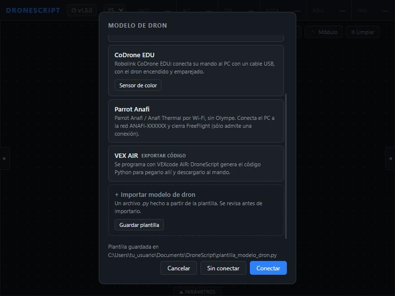
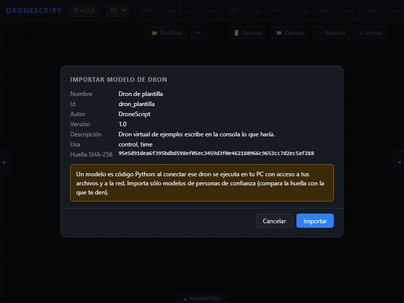
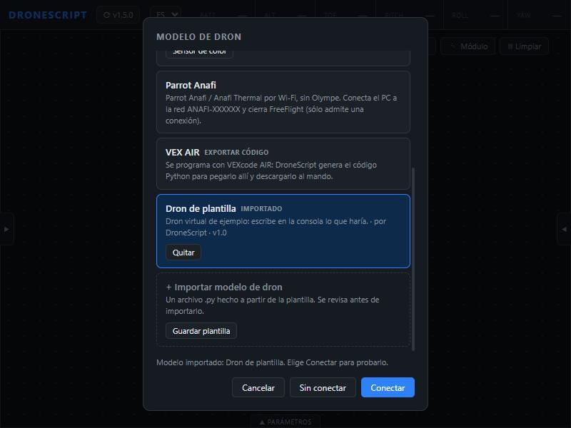
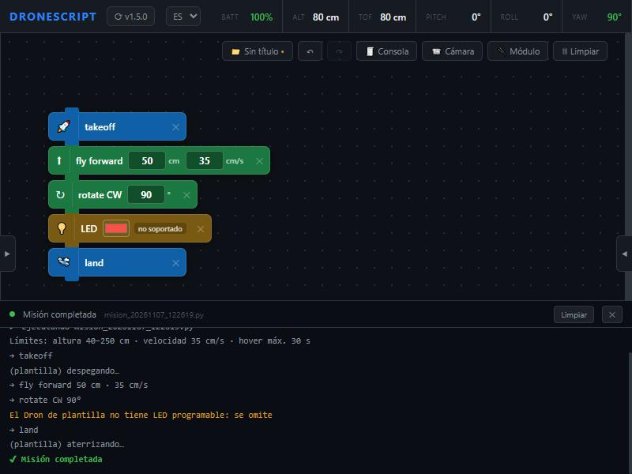
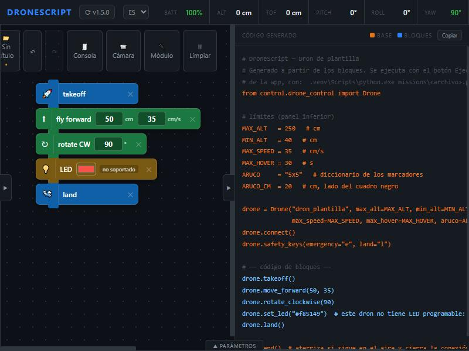
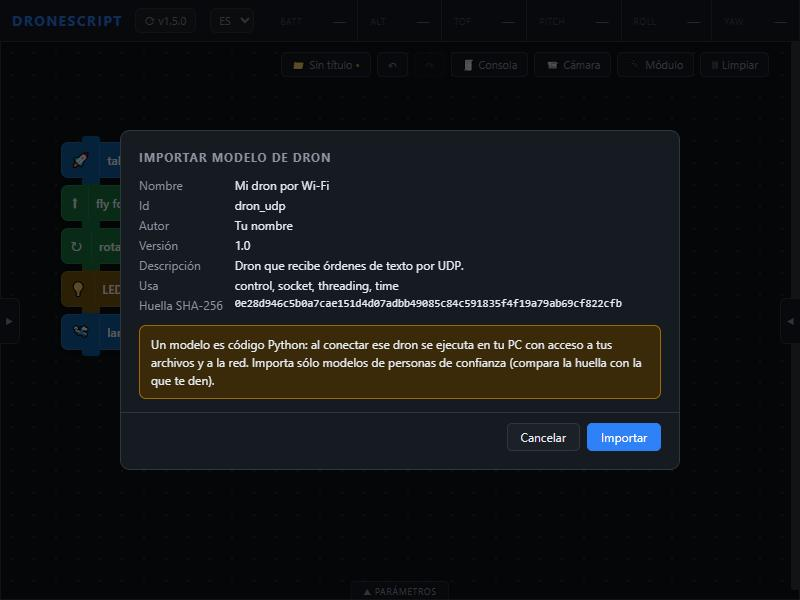
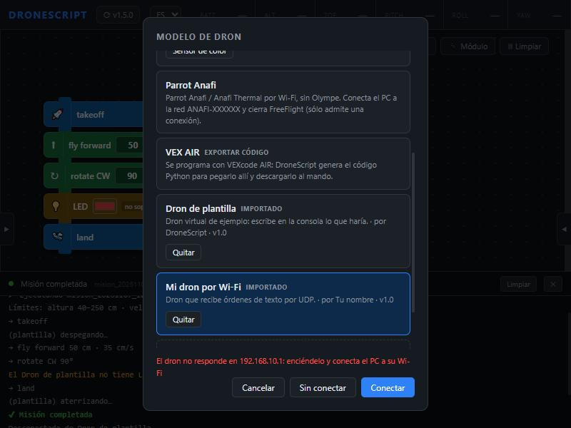

Agregar un dron nuevo a DroneScript
Tutorial paso a paso, de principio a fin: primero un dron virtual para aprender cómo funciona un modelo, y después tu propio dron por Wi-Fi.
Descargar este tutorial en Word Versión corta, sólo con las plantillas
Estas funciones están en la versión de prueba 1.5. DroneScript Edu 2.0 ya no las incluye: pasan a DroneScript, el editor de código, que está en desarrollo.
Requisitos
- DroneScript 1.5 o más nuevo. En la ventana Seleccionar dron tiene que aparecer la tarjeta + Importar modelo de dron. Si no está, actualiza con el botón de versión de la barra superior o descarga la última versión de la página de descargas.
- El manual o SDK de tu dron: qué órdenes acepta y por dónde (Wi-Fi, USB, Bluetooth). Sin eso no hay forma de saber qué mandarle.
- Un editor de texto: el Bloc de notas sirve; mejor Visual Studio Code o Thonny, que colorean el código.
- Para la Parte 1 no hace falta ningún dron: es un dron virtual que escribe en la consola lo que haría.
La idea: un modelo de dron
DroneScript ya se encarga de los bloques, los límites del panel (altura, velocidad, hover), las teclas de seguridad y el aterrizaje automático. Un modelo es un archivo .py que sólo traduce órdenes simples (despegar, avanzar 50 cm, girar 90°) al idioma de tu dron. Tiene dos partes:
| Parte | Qué es |
|---|---|
MODELO = {...} | id (minúsculas, números y _), nombre que se ve en la lista, clase que lo maneja, y autor, version y descripcion. DroneScript lo lee sin ejecutar el archivo. |
class MiDron(BaseDriver) | La clase que habla con el dron. Hereda de BaseDriver e implementa sus métodos. |
Métodos que el modelo tiene que definir (sin ellos, la app no lo importa):
| Método | Qué hace |
|---|---|
connect() / close() | Abrir y cerrar la conexión. Si el dron no responde, lanzar DroneError("qué revisar"). |
telemetry() | Devolver {"bat", "h", "tof", "pitch", "roll", "yaw", "fresh"} (%, cm, grados). Lo que no tenga, None. Se llama 4 veces por segundo. |
takeoff() / land() | Despegar y aterrizar, esperando a que termine. |
move(direction, cm) | direction: forward, back, left, right, up o down. DroneScript ya parte las distancias según min_move y max_move. |
rotate(degrees) | Grados positivos: sentido horario. |
set_speed(cm_s) | Fijar la velocidad y devolver la que se aplicó. |
emergency() | Apagar los motores ya. Se llama desde otro hilo: tiene que ser inmediato. |
safe_land() | Interrumpir lo que esté haciendo y aterrizar. Devuelve True si se confirmó. |
Lo que el dron tiene se declara con atributos: has_camera, has_led, has_buzzer, has_front, has_color, has_gimbal, supports_flip. Los bloques de lo que no tenga se marcan «no soportado» y se saltan. Opcionales: camera_on, take_photo, set_led, beep, flip, set_gimbal.
Dos reglas importantes. Para esperar, usa self.sleep(segundos) o revisa self.check_abort() en tus bucles: así Detener, Land y Emergency cortan la espera. Y toda espera de una respuesta tiene que tener un tiempo límite: si el dron no contesta, se lanza un error en vez de quedarse colgado.
Puedes usar las librerías de Python (socket, struct, threading, json…) y las que trae DroneScript: numpy, cv2 (OpenCV), av (vídeo) y serial (puerto serie).
Parte 1. Probar con el dron virtual
Antes de tocar un dron de verdad conviene ver el recorrido completo con la plantilla, que funciona tal como está: se importa, se conecta y vuela misiones, pero sólo escribe en la consola lo que haría.
Paso 1. Guarda la plantilla
- Abre DroneScript y pulsa Seleccionar dron en la barra superior (si ya hay un dron elegido, el botón muestra su nombre).
- Baja hasta la tarjeta + Importar modelo de dron y pulsa Guardar plantilla.
- La app la guarda en
Documentos\DroneScript\plantilla_modelo_dron.pyy te dice dónde quedó.

También puedes descargarla desde este tutorial (está al final de esta parte).
Paso 2. Impórtala
- En la misma tarjeta pulsa + Importar modelo de dron y elige el archivo
plantilla_modelo_dron.py. - La app lo revisa sin ejecutarlo y te muestra nombre, id, autor, las librerías que usa y su huella SHA-256.
- Si le falta un método obligatorio o hay un error de escritura, aquí te dice cuál (mira Problemas comunes al final).
- Pulsa Importar.

La huella identifica el archivo exacto: si alguien cambia una sola letra, la huella cambia. Si te pasan un modelo, pide la huella a quien lo hizo y compárala con la que muestra la app.
Paso 3. Conéctalo
El modelo aparece en la lista como Dron de plantilla · IMPORTADO. Elígelo y pulsa Conectar: es la primera vez que se ejecuta su código (su método connect). Con Quitar lo sacas de la lista; el archivo va a la papelera, no se borra.

Paso 4. Vuela una misión
Arma un programa corto con los bloques de siempre: takeoff, fly forward 50, rotate CW 90, land. Añade también un bloque LED: como la plantilla tiene has_led = False, el bloque aparece como no soportado y la misión lo salta con un aviso.
Pulsa Ejecutar. En la consola aparece lo que escribe el modelo con self.log(...), como «(plantilla) despegando…», y arriba la telemetría que devuelve telemetry().

Paso 5. Míralo en Python
Abre el panel de código: el programa en Python usa el id del modelo, Drone("dron_plantilla", ...). El bloque que el dron no soporta queda como comentario.

El archivo completo de la plantilla
Léelo con calma: cada método tiene comentarios que explican qué tendría que hacer un dron real.
Descargar plantilla_modelo_dron.py
"""Plantilla de modelo de dron para DroneScript.
Cópiala, cambia MODELO y la clase, e impórtala con «+ Importar modelo de dron» en la
ventana de elegir dron. Tal como está funciona: es un dron virtual que sólo escribe en
la consola lo que haría, para que pruebes el importador y tus misiones.
Cómo funciona un modelo:
- MODELO dice cómo se llama y qué clase usar. DroneScript lo lee SIN ejecutar el archivo.
- La clase hereda de BaseDriver (control/drivers/base.py) e implementa sus métodos.
DroneScript aplica antes los límites del panel (altura, velocidad, hover) y las
teclas de seguridad; el modelo sólo tiene que hablar con el dron.
- El código se ejecuta al pulsar «Conectar». Sólo puede usar las librerías que trae
DroneScript: las de Python (socket, struct, threading, json…) y numpy, cv2 (OpenCV),
av (vídeo H.264) y serial (puerto serie).
Ejemplos reales para copiar ideas: control/drivers/tello.py (UDP con texto),
anafi.py (UDP binario con acuses) y codrone.py (puerto serie con una librería).
"""
import time
from control.drivers.base import BaseDriver, DroneError, DroneRejected
MODELO = {
"id": "dron_plantilla", # minúsculas, números y _ ; es lo que va en Drone("…")
"nombre": "Dron de plantilla", # lo que se ve en la lista de drones
"clase": "DronPlantilla", # la clase de abajo
"descripcion": "Dron virtual de ejemplo: escribe en la consola lo que haría.",
"autor": "DroneScript",
"version": "1.0",
}
class DronPlantilla(BaseDriver):
name = "Dron de plantilla"
min_move = 20 # cm mínimos y máximos por orden de desplazamiento
max_move = 500
max_rotate = 360
min_speed = 10 # cm/s
max_speed = 100
# Qué tiene el dron. Los bloques de lo que no tenga se marcan «se omitirá».
supports_flip = False
has_tof = False
has_camera = False
has_gimbal = False
has_front = False
has_color = False
has_led = False
has_buzzer = False
def __init__(self):
super().__init__()
self.speed = 30
self._h = 0 # cm
self._yaw = 0 # °
self._bat = 100 # %
# ── conexión ──────────────────────────────────────────────────
def connect(self):
# Un dron real: abrir el socket o el puerto serie y comprobar que responde.
# Si no responde, lanzar DroneError con un mensaje que diga qué revisar.
self.connected = True
self.log("success", f"Conectado a {self.name} (virtual)")
def close(self):
self.connected = False
# ── telemetría ────────────────────────────────────────────────
def telemetry(self):
# «fresh» = los datos son recientes. Si no hay telemetría, DroneScript avisa
# y no puede aplicar los límites de altura.
return {"bat": self._bat, "h": self._h, "tof": self._h, "pitch": 0, "roll": 0,
"yaw": self._yaw, "fresh": self.connected}
# ── vuelo ─────────────────────────────────────────────────────
# Usa self.sleep() para esperar: se corta al pulsar Detener / Land / Emergency.
def takeoff(self):
self.flying = True # pesimista: si se pierde la respuesta, quizá sí despegó
self.log("info", "(plantilla) despegando…")
self.sleep(1.0)
self._h = 80
def land(self):
self.log("info", "(plantilla) aterrizando…")
self.sleep(1.0)
self._h = 0
self.flying = False
def move(self, direction, cm):
# direction: forward, back, left, right, up, down
if not self.flying:
raise DroneRejected(f"'{direction} {cm}': el dron está en tierra")
self.sleep(cm / max(self.speed, 1))
if direction == "up":
self._h += cm
elif direction == "down":
self._h = max(0, self._h - cm)
def rotate(self, degrees):
# grados positivos = sentido horario
self.sleep(abs(degrees) / 90)
self._yaw = int((self._yaw + degrees + 180) % 360 - 180)
def set_speed(self, cm_s):
self.speed = int(min(self.max_speed, max(self.min_speed, cm_s)))
return self.speed
# ── seguridad (se llaman desde otro hilo: que sean rápidos) ───
def emergency(self):
self.abort_event.set() # corta la espera en curso de la misión
self.flying = False # un dron real: apagar motores YA
self._h = 0
self.log("error", "(plantilla) motores apagados")
def safe_land(self):
self.abort_event.set()
if not self.flying:
return True
time.sleep(1.0) # aquí no se usa self.sleep: la misión ya se abortó
self._h = 0
self.flying = False
return True # True si se confirmó el aterrizaje
# Opcionales (BaseDriver ya responde «no disponible»): camera_on, take_photo,
# start_video, stop_video, set_gimbal, set_led, beep, flip, query.
if __name__ == "__main__":
raise DroneError("Esto es un modelo para importar en DroneScript, no un programa")Parte 2. Tu propio dron por Wi-Fi
El caso más común en drones educativos (el DJI Tello y sus clones): el PC se conecta al Wi-Fi del dron, le manda texto como takeoff o forward 50 por UDP a su IP y puerto, y el dron responde ok o error. La plantilla 2 ya hace todo eso; sólo tienes que poner los datos de tu dron.
Paso 1. Averigua cómo habla tu dron
Busca en el manual o SDK de tu dron estos datos. Si no hay SDK con órdenes de texto, mira la sección Si tu dron habla distinto.
| Dato | En la plantilla | Qué buscar |
|---|---|---|
| IP del dron | IP = "192.168.10.1" | La dirección del dron cuando el PC está en su Wi-Fi. |
| Puerto | PUERTO = 8889 | El puerto UDP donde escucha las órdenes. |
| Activar el modo SDK | self.send("command") | La orden que hay que mandar primero (no todos la necesitan). |
| Despegar / aterrizar | "takeoff" / "land" | Las órdenes de despegue y aterrizaje. |
| Moverse | f"{direction} {cm}" | Cómo se pide avanzar, retroceder, subir… y en qué unidades. |
| Girar | cw / ccw | Cómo se pide girar a la derecha y a la izquierda. |
| Velocidad | "speed 30" | Cómo se fija la velocidad. |
| Batería | "battery?" | Cómo se pregunta la batería (y la altura, si la da). |
| Emergencia | "emergency" | La orden que apaga los motores al instante. |
Paso 2. Adapta la plantilla
- Descarga
plantilla_dron_udp.py(al final de esta parte) y guárdala con otro nombre, por ejemplomi_dron.py. - En
MODELOcambiaid,nombreyautor. Si cambiasclase, cambia también el nombre de la clase: tienen que coincidir. - Cambia
IPyPUERTO. - Cambia
min_move,max_move,min_speedymax_speedpor los límites que diga el manual. - En cada método cambia el texto de la orden por el de tu dron. Si tu dron no responde
ok, ajustaorder(). - Si tu dron da la altura, pregúntala en
telemetry()igual que la batería y devuélvela en"h". Sin altura, DroneScript avisa de que no puede aplicar los límites de altura.
No borres los self.check_abort() ni los tiempos límite de send: son lo que permite que Detener, Land y Emergency corten una orden que se quedó esperando.
Paso 3. Impórtala
Igual que en la Parte 1: Seleccionar dron → + Importar modelo de dron, eliges tu archivo, revisas los datos y pulsas Importar. En Usa aparecen las librerías que importa el archivo.

Paso 4. Conéctate
- Enciende el dron y conecta el PC a su red Wi-Fi.
- En Seleccionar dron elige tu modelo y pulsa Conectar.
- Si el dron no contesta en 3 segundos, la conexión falla con el mensaje que escribiste en
connect(). Revisa que el dron esté encendido, que el PC esté en su Wi-Fi y que la IP y el puerto sean los del manual.

Cuando el PC se conecta al Wi-Fi del dron se queda sin internet. No pasa nada: DroneScript no lo necesita para volar.
Paso 5. El primer vuelo, con cuidado
- Vuela en un lugar amplio, sin gente cerca, con la mano en la tecla de Emergency.
- Primero sólo
takeoffyland. - Luego un movimiento corto (
fly forward 30) y un giro. - Revisa la consola: ahí salen los errores, las respuestas que no fueron
oky lo que escribas conself.log("info", "texto"). - Prueba Detener y Land en mitad de un movimiento: el dron tiene que obedecer en menos de un segundo.
Paso 6. Hacer cambios
Edita tu archivo y vuelve a importarlo con el mismo id: reemplaza al anterior, que queda en Documentos\DroneScript\modelos\papelera\. Si editas el archivo ya importado a mano, la app deja de aprobarlo (cambió su huella) y te pide volver a importarlo.
El archivo completo del dron por Wi-Fi
Descargar plantilla_dron_udp.py
"""Modelo de dron para DroneScript: un dron por Wi-Fi que recibe órdenes de texto por UDP.
Muchos drones educativos funcionan así (el DJI Tello y sus clones): el PC manda una orden de
texto, como "takeoff" o "forward 50", a la IP y el puerto del dron, y el dron responde "ok" o
"error". Cambia IP, PUERTO y las órdenes por las que use tu dron (vienen en su manual o SDK).
"""
import socket
import threading
import time
from control.drivers.base import BaseDriver, DroneError, DroneRejected
MODELO = {
"id": "dron_udp", # minúsculas, números y _ ; único
"nombre": "Mi dron por Wi-Fi", # lo que se ve en la lista de drones
"clase": "DronUDP", # la clase de abajo
"descripcion": "Dron que recibe órdenes de texto por UDP.",
"autor": "Tu nombre",
"version": "1.0",
}
IP = "192.168.10.1" # la IP del dron cuando el PC está conectado a su Wi-Fi
PUERTO = 8889 # el puerto UDP donde escucha las órdenes
class DronUDP(BaseDriver):
name = "Mi dron por Wi-Fi"
min_move = 20 # cm mínimos y máximos que acepta en una orden de movimiento
max_move = 500
max_rotate = 360
min_speed = 10 # cm/s
max_speed = 100
supports_flip = False # lo que no tenga: sus bloques se marcan «no soportado»
has_tof = False
has_camera = False
def __init__(self):
super().__init__()
self.speed = 30
self.sock = None
self.lock = threading.Lock() # una orden a la vez: la telemetría usa el mismo socket
self.bat = None
self.bat_time = 0.0
# ── conexión ──────────────────────────────────────────────────
def connect(self):
self.sock = socket.socket(socket.AF_INET, socket.SOCK_DGRAM)
self.sock.settimeout(0.2) # recvfrom espera como mucho 0,2 s y vuelve a mirar si hay que abortar
try:
reply = self.send("command", timeout=3, abortable=False) # pone el dron en modo SDK
except DroneError:
reply = None
if reply != "ok":
self.close()
raise DroneError(f"El dron no responde en {IP}: enciéndelo y conecta el PC a su Wi-Fi")
self.connected = True
self.log("success", f"Conectado a {self.name}")
def close(self):
self.connected = False
if self.sock:
self.sock.close()
self.sock = None
# ── enviar órdenes ────────────────────────────────────────────
def send(self, cmd, timeout=7.0, abortable=True):
"""Manda una orden y devuelve la respuesta del dron (texto)."""
with self.lock:
return self._send(cmd, timeout, abortable)
def _send(self, cmd, timeout, abortable):
self.sock.setblocking(False) # tirar respuestas atrasadas de órdenes anteriores
try:
while self.sock.recv(1024):
pass
except OSError:
pass
self.sock.settimeout(0.2)
self.sock.sendto(cmd.encode(), (IP, PUERTO))
limit = time.monotonic() + timeout
while time.monotonic() < limit:
if abortable:
self.check_abort() # Detener / Land / Emergency cortan la espera aquí
try:
data, _ = self.sock.recvfrom(1024)
return data.decode(errors="replace").strip()
except socket.timeout:
pass
raise DroneError(f"'{cmd}': el dron no respondió en {timeout:.0f} s")
def order(self, cmd, timeout=7.0):
"""Una orden que tiene que responder "ok"; si no, es un error."""
reply = self.send(cmd, timeout)
if reply.lower() != "ok":
raise DroneRejected(f"'{cmd}' → {reply}")
# ── telemetría ────────────────────────────────────────────────
def telemetry(self):
# DroneScript la pide 4 veces por segundo. La batería se pregunta como mucho cada 2 s,
# y sólo si no hay una orden en curso (si no, las respuestas se mezclarían).
if self.connected and time.monotonic() - self.bat_time > 2 and self.lock.acquire(blocking=False):
try:
self.bat = int(float(self._send("battery?", 2, abortable=False)))
self.bat_time = time.monotonic()
except (DroneError, ValueError):
pass
finally:
self.lock.release()
# Sin altura (None), DroneScript avisa de que no puede aplicar los límites de altura.
# Si tu dron la da, pregúntala igual que la batería (en el Tello: "height?").
return {"bat": self.bat, "h": None, "tof": None, "pitch": None, "roll": None, "yaw": None,
"fresh": time.monotonic() - self.bat_time < 5}
# ── vuelo ─────────────────────────────────────────────────────
def takeoff(self):
self.flying = True # pesimista: si se pierde la respuesta, quizá sí despegó
try:
self.order("takeoff", timeout=20)
except DroneRejected:
self.flying = False
raise
def land(self):
self.order("land", timeout=20)
self.flying = False
def move(self, direction, cm):
# direction: forward, back, left, right, up, down (como las órdenes del Tello)
self.order(f"{direction} {int(cm)}", timeout=cm / max(self.speed, 1) + 7)
def rotate(self, degrees):
# grados positivos = sentido horario
sentido = "cw" if degrees >= 0 else "ccw"
self.order(f"{sentido} {int(round(abs(degrees)))}", timeout=abs(degrees) / 30 + 7)
def set_speed(self, cm_s):
v = int(min(self.max_speed, max(self.min_speed, cm_s)))
self.order(f"speed {v}")
self.speed = v
return v
# ── seguridad (se llaman desde otro hilo: tienen que ser rápidos) ──
def emergency(self):
self.abort_event.set()
for _ in range(3): # UDP no garantiza la entrega: se repite
try:
self.sock.sendto(b"emergency", (IP, PUERTO))
except (OSError, AttributeError):
pass
self.flying = False
def safe_land(self):
self.abort_event.set() # la misión suelta el socket en menos de 0,2 s
try:
ok = self.send("land", timeout=15, abortable=False).lower() == "ok"
except DroneError:
return False
if ok:
self.flying = False
return okSi tu dron habla distinto
- UDP con mensajes binarios (bytes en vez de texto): usa
struct.packpara armarlos. Ejemplo real encontrol/drivers/anafi.pydel código de DroneScript. - Puerto serie o USB: usa
serial(pyserial). Ejemplo real encontrol/drivers/codrone.py. - Sólo una app del fabricante, sin SDK: no se puede controlar desde DroneScript. El modelo necesita órdenes documentadas.
Problemas comunes
| Mensaje | Qué hacer |
|---|---|
| Falta el diccionario MODELO = {…} | El archivo tiene que tener MODELO = {"id": …, "nombre": …, "clase": …} arriba, fuera de la clase. |
| MODELO debe ser un diccionario con valores fijos (textos) | Escribe los valores entre comillas, sin variables ni cálculos. |
| MODELO necesita «…» (texto) | Falta id, nombre o clase. |
| El id «…» no vale | Usa minúsculas, números y _, de 2 a 31 caracteres, empezando por letra. |
| El id «…» ya lo usa un dron de DroneScript | Elige otro id: tello, codrone, anafi… ya existen. |
| No está la clase «…» que indica MODELO | El nombre en "clase" y el de class … tienen que ser iguales, con mayúsculas. |
| La clase «…» debe heredar de BaseDriver | Escribe class MiDron(BaseDriver): e importa BaseDriver como en la plantilla. |
| A la clase «…» le faltan: … | Define los métodos de la lista (ver la tabla de métodos obligatorios). |
| No es Python válido (línea N: …) | Error de escritura en esa línea: una comilla, paréntesis o sangría. |
| El modelo «…» falló al cargarse: … | Su código falló al ejecutarse al conectar. El final del mensaje dice qué; si es No module named …, usa una librería que DroneScript no trae. |
| El modelo «…» no está aprobado | El archivo cambió desde que lo importaste: vuelve a importarlo. |
| El dron no responde en … | Enciende el dron, conecta el PC a su Wi-Fi y revisa IP y PUERTO. |
Seguridad. Un modelo es código Python con los mismos permisos que DroneScript: puede leer tus archivos y usar la red. Si te pasan uno, impórtalo sólo si confías en quien lo hizo y compara la huella que te den con la que muestra la app.